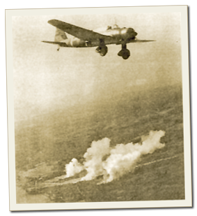

|
j
a v a s c r i p t |
April 7, 1942
While London mentioned the all-out Bataan offensive, the Japanese propaganda machine, mindful of repeating their previous mistakes, skipped it entirely. VoF was still on shortwave only — hard to hear due to KZRH interference. The 0900 news from Bataan was short: Enemy continues heavy attacks aimed at the right center lines. Enemy shelled our fortifications for two hours. There were casualties and damage. Our forces continue active patrolling. KGEI finally admitted the Japanese made some gains last Saturday, but was somewhat vague on developments after that.

KI-30 'Ann' over Bataan
The Japanese are using every plane they have, including modern dive-bombers, though we haven't seen any big bombers. More than half are five-year-old types and some have fixed undercarriages. Tony Morales saw one landing in flames yesterday at 1900. Ran into Floyd MacCarthy and Henry Mangels this afternoon as they aimlessly wandered the streets. They've got 10-day passes out of Santo Tomas due to the death of a relative, but are planning to return early. After we said goodbye it occurred to me that they must be broke. Remembering Floyd's wife and young kid were in Santo Tomas, I called him back and asked if he could use some money. The look on his face said it all. After 30 seconds, he managed to talk about paying it back but I cut him short. "Come around tomorrow and I'll get you P50 — you can pay me when this is over." |
|
|
|
|